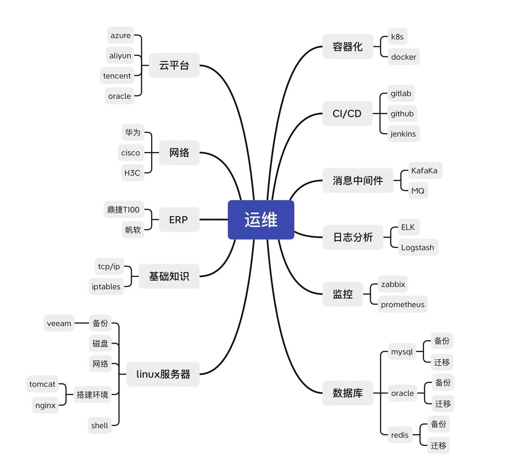

运维知识图谱
运维图谱

云原生平台基础
Docker、Docker Compose：容器化技术Kubernetes：大规模容器编排Helm：云原生应用商店Rancher： 易用的容器管理平台KubeSphere：一站式容器云平台OpenTracing：云原生链路追踪标准Jaeger：云原生链路追踪实现产品Istio：ServiceMesh下的服务流量治理Jenkins、JenkinsX、Jenkins-BlueOcean：老牌的CI/CD平台Gtilab/hub-CICD：Gitlab/hub自带的CICDArgo：kubernetes声明式持续集成Nexus：Maven私库Harbor：Docker私库Prometheus+Granfana：监控与可视化平台ElasticSearch+Fluentd+Kibana：日志与可视化方案Serverless：无服务器上云方案（不用去管服务器，不是不需要服务器）SpringCloud Kubernetes：微服务上云方案
熟练掌握docker和k8s技术 devops掌握jenkins和gitlab
应用12要素
在现代，软件通常作为服务交付：称为Web 应用程序或软件即服务。十二因素应用程序是一种构建软件即服务应用程序的方法，它：
- 使用
声明格式进行设置自动化，以最大限度地减少新开发人员加入项目的时间和成本； - 与底层操作系统有一个
干净的合同，在执行环境之间提供最大的可移植性； - 适合
部署在现代云平台上，无需服务器和系统管理； 最大限度地减少开发和生产之间的差异，实现持续部署以获得最大的敏捷性；- 并且可以在不对工具、架构或开发实践进行重大更改的情况下进行
扩展。
| 名称 | 英文 | 描述 |
|---|---|---|
| 基准代码 | codebase | 一份基准代码，多份部署 |
| 依赖 | Dependencies | 显示声明依赖关系 |
| 配置 | config | 在环境中存储配置 |
| 后端服务 | backing services | 把后端服务当做附加资源 |
| 构建，发布，运行 | build，release，run | 严格分离构建和运行 |
| 进程 | Processes | 以一个或多个无状态进程运行应用 |
| 端口绑定 | port binding | 通过端口绑定来提供服务 |
| 并发 | concurrency | 通过进程模型进行扩展 |
| 易处理 | disposability | 快速启动和优雅终止可最大化健壮性 |
| 开发环境和线上环境等价 | Dev/prod parity | 尽可能保持开发、预发布、线上环境 |
| 日志 | log | 把日志当做事件流 |
| 管理进程 | admin processes | 后台管理任务当做一次性进程处理 |